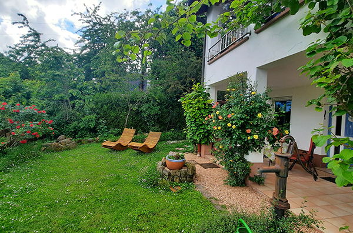
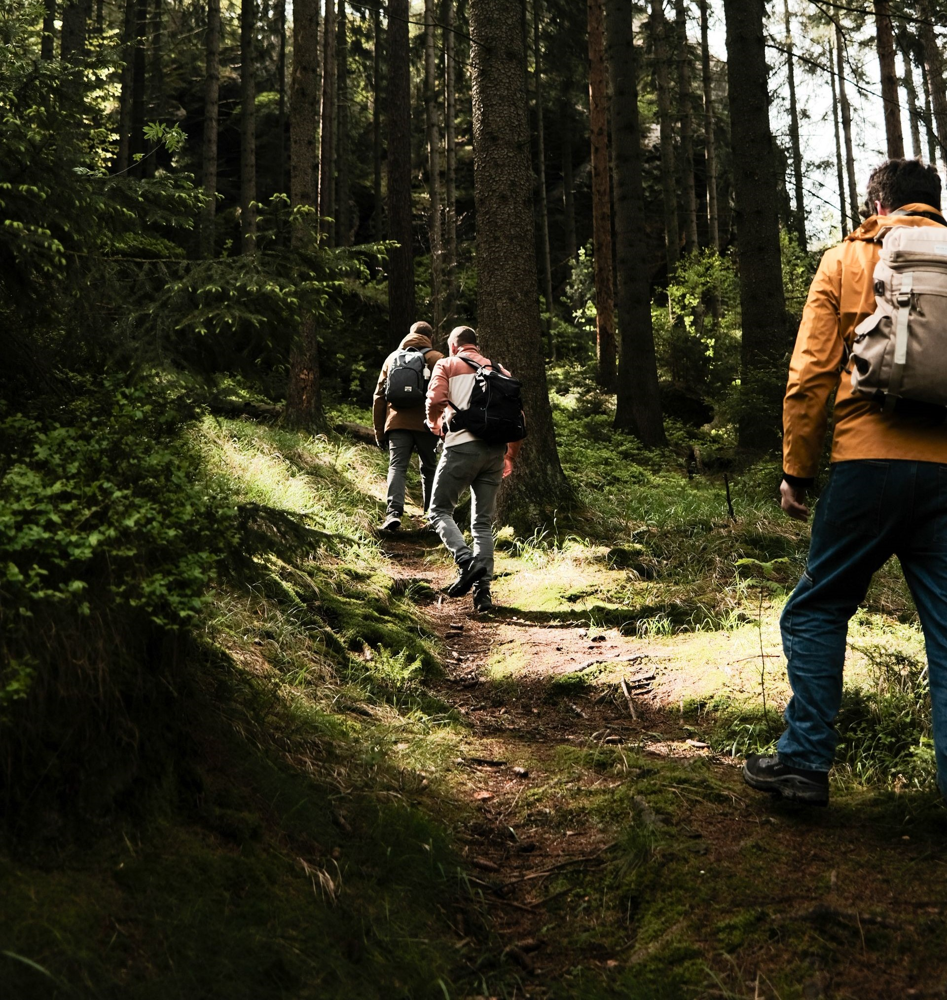

Herzlich Willkommen bei der Ferienwohnung Dorfblick!

Erholen Sie sich in einer idyllisch gelegenen Ferienwohnung über den Dächern von Leinsweiler an der Südlichen Weinstraße.
Sie liegt am Südhang des Pflälzer Waldes und ist mit einer Sonnenwiese, mediterranem Garten und einer überdachten Terrasse ausgestattet. Darüber hinaus hat man einen wunderschönen Ausblick auf die Rheinebene und die riesige Rebenlandschaft.
Den Ortskern in Leinsweiler erreichen Sie in wenigen Gehminuten.

Die Ferienwohnung
Weitere Infos zu Ausstattung, Lage und Preis der Ferienwohnung finden Sie hier.

Freizeitangebote
Für Informationen zu Wanderungen und anderen Freizeitangeboten in Leinsweiler und Umgebung, klicken Sie hier.
Der Ort Leinsweiler
Mehr Infos zum wunderschönen Weindorf Leinsweiler im Herzen der Pfalz finden Sie hier
Sie sind bereits überzeugt?
Dann nehmen Sie für Ihre Buchung gerne Kontakt mit mir auf. Ich freue mich von Ihnen zu hören!